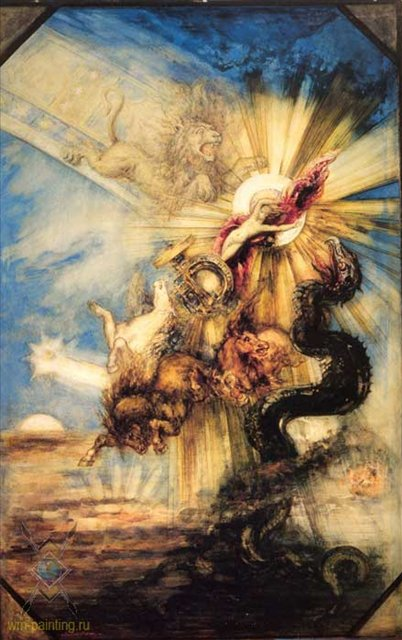

Антична міфологія
 Міфи, боги, герої, демони Еллади і Риму. Слово «антична» в перекладі з латинської (antigues) означає «давня». Античну міфологію поряд з біблійною по праву вважають найбільш значною за ступенем її впливу на подальший розвиток культури багатьох народів, особливо європейських. Під античною міфологією розуміється, спільність грецьких і римських міфів, тому іноді можна зустріти термін «греко-римська міфологія», хоча основою для римської міфологічної системи була все ж саме грецька.
Римляни багато в чому запозичили легенди Еллади, іноді по-своєму трактуючи образи і видозмінюючи сюжети. Завдяки поширеним в Європі латині і - в меншій мірі - давньогрецької мови античні міфи, отримали не тільки широке поширення, але зазнали глибокого осмислення і вивчення.
Неможливо переоцінити і їх естетичне значення: не залишилося жодного виду мистецтв, який не мав би в своєму арсеналі сюжетів, заснованих на античній міфології - є вони а скульптурі, в живописі, музиці, поезії, прозі і т. Д. Що стосується словесності, то прекрасно сказав про це в свій час А. С. Пушкін: «Не вважаю за потрібне говорити про поезію греків і римлян: здається, кожна освічена людина повинна мати достатнє поняття про створіння величавої старовини».
Грецька міфологія. Уже в найдавніших пам'ятках грецького творчості ясно позначається антропоморфний характер грецького політеїзму, пояснюються національними особливостями всього культурного розвитку в цій сфері; конкретні уявлення переважають над абстрактними, як і в кількісному відношенні людиноподібні боги і богині, герої і героїні переважають над божествами абстрактного значення (які, в свою чергу, отримують антропоморфічні риси).
У тому чи іншому культі, з тих чи інших божеством з'єднуються ті чи інші загальні або міфологічні уявлення. Відомі різні поєднання, ієрархії генеалогії античних божественних істот - «Олімп», різні системи "двенадцатібожія" (наприклад, в Афінах - Зевс, Гера, Посейдон, Деметра, Аполлон, Артеміда, Гефест, Афіна, Арей, Афродіта, Гермес, Гестія). Такі сполуки пояснюються не з творчого тільки моменту, але і з умов історичного життя еллінів. У общерелігіозном свідомості еллінів не існувало, мабуть, будь-якої певної загальновизнаною догматики. Різноманітність релігійних уявлень знаходило собі вираз і в різноманітності культів, зовнішня обстановка яких тепер все більш усвідомлюється завдяки розкопкам і знахідок. Ми дізнаємося, які де шанувалися боги або герої і який де або де який шанувався переважно (наприклад, Зевс - в Додоне і Олімпії, Аполлон - в Дельфах і на Делосі, Афіна - в Афінах, Гера на Самосі, Асклепій - в Епідавре); знаємо шановані усіма (чи багатьма) еллінами святині начебто дельфійського або додонского оракула або святині делосской; знаємо великі і дрібні амфиктионии (культові співтовариства). Можна розрізнити, далі, культи державні і приватні.
Всепоглинаюче значення держави позначилося і в релігійній сфері. Античний світ, взагалі кажучи, не знав ні внутрішньої церкви як царства не від світу цього, ні церкви як держави в державі: «церква» і «держава» були в ньому поняттями, поглинаючими або обумовлюють один одного, і, напр., Жрець був той же державний магістрат. Це правило не скрізь, проте, могло бути проведено з безумовною послідовністю; практика викликала приватні ухилення, створювала ті чи інші комбінації. Далі, якщо відоме божество вважалося головним божеством відомого держави, то держава визнавала іноді (як в Афінах) разом з тим і деякі інші культи; поряд з цими загальнодержавними культами існували й окремі культи державних поділів (наприклад, афінських демов), і культи домашні або сімейні, а також культи приватних товариств або осіб.
Важко встановити в точності, коли з'явилися перші грецькі міфи і легенди, в яких були заховані від світу людиноподібні боги, і чи є вони спадщина древньої критської культури (3000-1200 роки до нашої ери або мікенської (до 1550 року до нашої ери), коли на табличках вже зустрічаються імена Зевса і Гери, Афіни і Артеміди. Легенди, перекази і сказання передавалися з покоління в покоління співаками-аедамі і не були зафіксовані письмово. Першими записаними творами, що донесли до нас неповторні образи і події, були геніальні поеми Гомера Іліада »і« Одіссея ». Запис їх датується VI століттям до нашої ери. На думку історика Геродота, Гомер міг жити за три століття до цього, тобто близько IX-VIII століть до нашої ери. Але, будучи аедом, він використовував творчість попередників , ще більш древніх співаків, найраніший з яких, Орфей, по ряду свідоцтв, жив приблизно у другій половині II тисячоліття до нашої ери.
До цього часу відносяться міфи про подорож аргонавтів за золотим руном, серед яких знаходився і Орфей. Сучасна наука вважає, що великий епос не може з'явитися несподівано і випадково. Тому гомерівські поеми розглядаються як завершення тривалого розвитку догомеровскої, давно зниклих героїчних пісень, сліди яких, однак, можна знайти в самих текстах «Іліади» та «Одіссеї».
Недосяжний зразок, яким донині є гомерівський епос, не тільки доніс до нащадків великі знання про еллінської життя, а й дозволив скласти уявлення про погляди греків на світобудову. Усе, що існує утворилося з Хаосу, який являв собою боротьбу стихій. Першими з'явилися Гея - земля, Тартар - пекло і Ерос - любов. Від Геї народився Уран, і потім від Урана і Геї - Кронос, циклопи і титани. Здолавши титанів, Зевс запановує на Олімпі і стає правителем світу і гарантом вселенського порядку, який нарешті настає в світі після довгих потрясінь.
Стародавні греки були найбільшими міфотворцями Європи. Саме вони придумали слово "міф" (в перекладі з грецького "переказ", "сказання"), яким ми сьогодні називаємо дивовижні історії про богів, людей і фантастичних істот. Міфи були покладені в основу всіх літературних пам'яток Давньої Греції, включаючи поеми Гомера, настільки улюблені в народі. Наприклад, афіняни з дитинства були знайомі з головними героями "Орест", трилогії поета Есхіла. Жодне з подій в його п'єсах не було несподіваним для глядачів: ні вбивство Агамемнона, ні помста його сина Ореста, ні переслідування Ореста фуріями за смерть матері. Їх найбільше цікавило підхід драматурга до заплутаної ситуації, його тлумачення мотивів провини і спокути гріха.
Важко по достоїнству оцінити значення тих театральних постановок, але, на щастя, у людей залишилися джерела багатьох трагедій Софокла і Евріпіда - самі міфи, що зберігають велику привабливість навіть в короткому викладі. І в нашому столітті людей хвилює стара як світ історія Едіпа, вбивці батька; пригоди Ясона, який перетнув Чорне море в пошуках чарівного золотого руна; доля Олени, найгарнішою з жінок, яка послужила причиною Троянської війни; мандри хитромудрого Одіссея, одного із найхоробріших грецьких воїнів; дивовижні подвиги могутнього Геракла, єдиного з героїв, хто заслужив безсмертя, а також історії безлічі інших персонажів. Римляни, спадкоємці культурних традицій Егейського світу, багатьох італійських божеств прирівняли до богів грецького пантеону. У зв'язку з цим цікава історія з богом родючості, вина і оргій Діонісом-Бахусом. У 186 році до нашої ери римський сенат прийняв суворі закони по відношенню до шанувальників цього бога. Кілька тисяч людей було страчено, перш ніж культ Бахуса вдалося привести у відповідність з моральними нормами.
Римська міфологія в своєму первісному розвитку зводилася до анімізму, тобто вірі в одухотворення природи. Стародавні італійци поклонялися душам померлих, причому головним мотивом поклоніння був страх перед надприродною їх силою. Для римлян, як і для семітів, боги представлялися страшними силами, з якими треба було рахуватися, я вблагаю їх суворим дотриманням всіх обрядів. Будь-яку хвилину свого життя римлянин боявся неприхильності богів і, щоб заручитися їх прихильністю, не робив і не здійснював жодного справи без молитви і встановлених формальностей. На противагу художньо обдарованим і рухомим еллінам, римляни не мали народної епічної поезії; їх релігійні уявлення висловилися в нечисленних, одноманітних і мізерних за змістом міфах. У богів римляни бачили тільки волю (numen), яка втручалася в людське життя. Римські боги не мали ні свого Олімпу, ні генеалогії, і зображувалися у вигляді символів: Мани - під виглядом змій, Юпітер - під виглядом каменю, Марс - під виглядом списи, Веста - під виглядом вогню. Первісна система римської міфології - судячи з модифікованим під самими різними впливами даними, які нам повідомляє давня література - зводилася до перерахування символічних, безособових, обожнення понять, під заступництвом яких складалася життя людини від зачаття його до смерті; Проте абстрактний і безособові були божества душ, культ яких становив найдавнішу основу сімейної релігії. На другій стадії міфологічних уявлень стояли божества природи, головним чином річок, джерел і землі, як производительниц всього живого. Далі йдуть божества небесного простору, божества смерті і пекла, божества - уособлення духовних і моральних сторін людини, а також різних відносин суспільного життя, і, нарешті, боги іноземні та герої. До божествам, які уособлюють душі померлих, ставилися Manes, Lemures, Larvae, а також Genii і Junones (представники продуктивного і життєвого початку в чоловікові і жінці). При народженні генії вселяються в людину, при смерті - відділяються від тіла і стають manes (добрими душами).
На честь Юнони і Генія в день народження приносили жертви, їх ім'ям клялися. Пізніше були додані кожному сімейству, місту, державі, для охорони, свої Генії. З Геніями споріднені Лари, покровителі полів, виноградників, доріг, гаїв і вдома; в кожній родині був свій lar familiaris, який охороняв вогнище і будинок (пізніше їх було два). Крім того, були особливі боги вогнища (власне покровителі коморі) - Penates, до яких зараховувалися, між іншим, Янус, Юпітер, Веста. Божества, під заступництвом яких знаходилася вся людське життя у всіх її проявах, називалися dei indigetes (всередині діючі або всередині живуть боги). Їх було стільки ж, скільки різних діяльностей, т. Е. Безліч; кожен крок людини, кожен рух і дію в різні віки були опекаеми особливими богами, списки (indigitamenta) яких були складені в IV столітті до н. е. понтифіками, з докладними вказівками, до якого божества з якою молитовної формулою і в яких випадках життя слід звертатися. Так, були боги, що оберігали людини з часу зачаття до народження (Janus Consivius, Saturnus, Fluonia і ін.), Які допомагали при народженні (Juno Lucina, Carmentis, Prorsa, Postversa, і ін.), Які охороняли матір і дитину відразу після пологів ( Intercidona, Deus Vagitanus, Cunina, і ін.), які цим опікувались про дітей в перші роки дитинства (Potina, Educa, Cuba, Levana, Earinus, Fabulinus), боги зростання (Iterduca, Mens, Consus, Sentia, Voleta, Jnventas, і ін .), боги покровителі шлюбу (Juno juga, Afferenda, Domiducus, Virginensis і ін.). Крім того, були божества діяльностей (особливо землеробства і скотарства) - наприклад Прозерпіна, Флора, Помона (Proserpina, Flora, Pomona), і місць - наприклад Nemestrinus, Cardea, Limentinus, Rusina. При подальшій еволюції міфологічних уявлень, деякі з цих божеств більш індивідуалізована, до основних їх атрибутам приєднувалися інші і міфологічний образ ставав рельєфніше, наближаючись до людського, причому деякі божества були з'єднані в шлюбні пари. На цьому ступені розвитку релігійних уявлень виступають божества природи - боги і богині водної стихії, полів, лісів, а також деяких явищ людського життя. Божества джерел (звичайно - богині) шанувалися в гаях і володіли ще даром віщування і пісні, а також були помічницями при пологах. До числа цих божеств відносилися, наприклад, Camenae і Egeria - віща дружина Нуми. З річкових богів в Римі користувався шануванням pater Tiberinus, якого умилостивляли жертвою Арге (робили з очерету 27 ляльок, яких кидали в воду), Numicius (в Лавінії), Clitumnus (в Умбрії), Volturnus (в Кампанії). Представником водної стихії був Нептун, пізніше, через ототожнення з Посейдоном, зробився богом моря (з 399 року до нашої ери).
До богів, діяльність яких виявлялася в природі та житті і які мали більш яскраву індивідуальність, відносяться Янус, Веста, Вулкан, Марс, Сатурн і інші боги родючості та діяльності в рослинному і тваринному світі. Янус з покровителя двері (janua) став представником всякого входу взагалі, а потім богом початку, внаслідок чого йому було присвячено початок дня і місяця (ранок - звідси Janus Matutinus) і все календи, а також названий на його імені місяць січень, як співпадає з початком перебування днів. Його закликали при початку кожної справи, особливо при жертвоприношеннях, і вважали навіть за principium всього і за батька богів. Головне святилище бога Януса (Janus Geminus або Quirinus) знаходилося на північному кінці форуму, проти храму Вести. Це була старовинна арка, що служила як би входом на форум (атріум Риму). Ворота її у воєнний час були розкриті; під аркою знаходилося зображення дволикого бога. Іншим місцем його культу був названий на його імені пагорб Яникул, на якому, за переказами, Анк Марцій спорудив зміцнення для захисту торгового тракту, що вів до Етрурії і гавані; в зв'язку з цим Янус був богом покровителем торгівлі і мореплавання. З Янусом Matutinus споріднена Mater Matuta, богиня світанку, подателька світла, помічниця при пологах, разом з Портумном охоронниця гаваней. Веста уособлювала собою вогонь, що горів у вогнищі як громадському, так і приватному. Культом богині завідували шість дів, названих на ім'я її весталками. На противагу Весті, яка уособлювала благодійну силу вогню, Вулкан або Волкан (Volcanus) був представником руйнівної вогненної стихії. Як бог стихії, небезпечної для міських будівель, він мав храм на Марсовому полі. Він призивався в молитвах і разом з богинею родючості, Майєю, і вважався божеством сонця і блискавки. Пізніше він був отожествлен з Гефестом і почали шанувати, як бог ковальського мистецтва і вулканів.
Головними божествами, протегував землеробства, були Сатурн (бог посіву), Конс (бог жнив) і Опс, дружина Конса. Пізніше Сатурн був отожествлен з грецьким Кроном, Опс - з Реєю, причому багато особливостей грецького культу були внесені в римський культ цих божеств. Землеробства і скотарства протегували також інші боги лісів і полів, що символізували собою сили природи і вважалися в гаях і у джерел. Їх атрибути і божественні властивості були настільки ж прості, як і саме життя і обстановка їх шанувальників. За все, що було дорого і приємно хліборобові і скотарю, вони вважали себе зобов'язаними божествам, який надсилав своє благословення. Сюди ставилися Фавн, з дружиною Фавна (Bona Dea), - благочинний бог, ототожнення пізніше з царем Евандро; біг жерців Фавна, луперки, мав на меті звести благословення бога на людей, тварин і поля. Сільван (лісовий бог, дідько), що лякав самотніх подорожніх віщими голосами, був покровителем кордонів і власності; Лібер і Лібера - подружжя, уособлювала родючість полів і виноградників - були отожествлени пізніше з грецької подружжям Діоніса і Персефони; Вертумн і Помона охороняли сади і фруктові дерева; Ферон вважалася подательницей рясної жнив; Флора була богинею розквіту і родючості; Скотарство охороняла пасовища і худобу. Діана протегувала родючості, на що вказує, може бути, спільність свята її (13 серпня) з жертвопринесенням на честь Вертумна. Крім того, Діана охороняла рабів, особливо тих, які шукали притулку в її гаю (поблизу Тускула, у Ариции), допомагала жінкам при пологах, посилала родючість домами; пізніше вона ототожнити з Артемідою, зробившись богинею полювання і місяця. До божествам, який надсилав родючість, ставився також Марс - один з найбільш шанованих италийцами національних богів, бути може древнє божество сонця. До нього зверталися з молитвами про дарування родючості полів і виноградників; в честь його була встановлена ??так звана священна весна (ver sacrum). Він був також богом війни (Mars Gradivus); військові атрибути його (священні списи і щит) вказують на старовину культу. Тотем Марса, picus (дятел), з плином часу став богом лісів і лугів, покровителем землеробства, і шанувався, під ім'ям Picumnus, спільно з пілумн і пікумн, богом молотьби. Близько до Марсу стоїть і Сабінські бог Квирин; в пізніших переказах Марс був зроблений батьком Ромула, а Квирин отожествлен з Ромулом. Могутніше всіх згаданих божеств були боги небесного і повітряного простору, Юпітер і Юнона: Юпітер - як бог денного світла, Юнона - як богиня місяця. Гроза приписувалася Юпітеру, як у греків - Зевса; тому Юпітер вважався наймогутнішим з богів. Його зброя - блискавка; в давні часи в особливих культах він навіть називався блискавкою. Він же посилав запліднюючі дощі (Elicius) і шанувався як бог-подавач родючості і достатку (Liber). На честь його були встановлені свята, пов'язані зі збором винограду; він був покровителем землеробства, скотарства і молодого покоління.
Навпаки, атмосферні явища, що приносять небезпеку і загибель людям, приписувалися вейовіс (Veiovis, Vediovis) - злому Юпітеру; споріднений Юпітеру Summanus (sub mane - під ранок) був богом нічних бур. Як помічник в битвах, Юпітер називався Stator, як подавець перемоги - Victor; в честь його була заснована колегія фециалов, які вимагали задоволення у ворогів, оголошували війну і укладали договори з дотриманням відомих обрядів. Внаслідок цього Юпітер призивався на підтвердження вірності слова, як Deus Fidius - бог клятв. У зв'язку з цим Юпітер був також покровителем кордонів і власності (Juppiter Terminus або просто Terminus). Головним священнослужителем Юпітера був flamen Dialis; дружина фламина - flaminica - була жрицею Юнони. Культ Юнони був поширений у всій Італії, особливо у латинян, осков, умбрів; в честь її отримав свою назву місяць Junius або Junonius. Як місячної богині, їй були присвячені всі календи; тому ж вона називалася Lucina або Lucetia. Як Juno Juga або Jugalis або Pronuba, вона освячувала шлюбні союзи, як Sospita - охороняла жителів. Божества підземного світу не мали тієї яскравої індивідуальності, яка вражає нас у відповідному відділі грецької міфології; у римлян не було навіть царя цього підземного світу. Богом смерті був Orcus; поряд з ним згадується богиня - покровителька померлих - Tellus, Terra mater, - брала тіні в своє лоно. Як мати ларів і манов, вона називалася Lara, Larunda і Mania; як avia Larvarum - вона уособлювала собою жах смерті. Ті ж релігійні уявлення, які створили ряд dei indigetes - божеств-представників окремих людських дій і діяльностей, - викликали ряд божеств, які уособлювали моральні і духовні абстрактні поняття і людські відносини. Сюди відносяться Fortuna (Доля), Fides (Вірність), Concordia (Згода), Honos і Virtus (Честь і Хоробрість), Spes (Надія), Pudicitia (Сором'язливість), Salus (Порятунок), Pietas (Родинна любов), Libertas (Свобода ), Clementia (лагідність), Pax (Світ) і ін.
В імператорську епоху майже кожне абстрактне поняття втілювалося в образі жінки, з відповідним атрибутом. Були, нарешті, ще боги, засвоєні римлянами у інших народів, головним чином у етрусків і греків. Грецьке вплив виразилося особливо сильно після того, як були привезені в Рим з Кум Сівілліних книги - збірник грецьких висловів оракула, що зробився книгою одкровення римської релігії. Грецькі релігійні поняття і особливості грецького культу твердо оселилися в Римі, або зливаючись зі спорідненими римськими, або витісняючи бліді римські уявлення. Боротьба рельєфних образів грецької релігії з неясними обрисами римської скінчилася тим, що римські міфологічні уявлення майже зовсім втратили національний характер, і тільки завдяки консервативному культу римська релігія зберегла свою індивідуальність і вплив. До числа іноземних божеств відносяться етруська Мінерва (Menrva, Minerva), богиня мислення і розуму, покровителька ремесел і мистецтв. Завдяки порівнянні з Паладій, Мінерва увійшла в Капітолійському тріаду і мала в Капітолійському храмі свою целлу. Відмінність Мінерви від Паллади складалося лише в тому, що перша не мала відношення до війни. Венера ймовірно була стародавньої італійської богинею принади і розквіту, але в культі злилася з грецької Афродітою. Меркурій спочатку був відомий як deus indiges - покровитель торгівлі (merx, mercatura), але пізніше, через зіставлення з Гермесом, прийняв атрибути грецького бога. Геркулес (переробка на лат. Лад грец. ???????) став відомий в Римі з встановленням лектістерній; сказання про нього цілком запозичені з грецької міфології. Під назвою Церери (Ceres) з 496 року до нашої ери була відома грецька Деметра, культ якої залишався в Римі зовсім грецьким, так що навіть жрицями при її храмі були гречанки. Аполлон і Dis pater - також чисто грецькі божества, у тому числі останній відповідав Плутону, на що вказує зіставлення латинського імені з грецьким (Dis = dives - багатий = ???????). У 204 році був привезений в Рим священний камінь Великої Ідейської Матері з Пессінунт; в 186 році існував уже грецьке свято в честь Діоніса-Лібера - Вакханалії; потім з Олександрії перейшли в Рим культи Ізіди і Серапіса, а з Персії - містерії сонячного бога Мітри. Героїв, в грецькому сенсі, у римлян не було, бо не було епосу; тільки деякі окремі боги природи, в різних місцевостях, шанувалися як засновники найдавніших установ, спілок і міст. Сюди відносяться найдавніші царі (Фавн, Пік, Латин, Еней, Іул, Ромул, Нума і ін.), Зображувані не стільки як герої воєн і битв, скільки як організатори держав і законодавці. І в цьому відношенні латинські оповіді склалися не без впливу грецької епічної форми, в яку висловлювала взагалі значна частина римського релігійного матеріалу.
Особливою характеристичною рисою цих героїв було те, що, хоча вони і представлялися доісторичними діячами, але закінчували своє життя не смертю, а зникненням невідомо куди (сюди ставився термін non comparuit). Такою була, за переказами, доля Енея, Латина, Ромула, Сатурна і ін. Герої Італії не залишають після себе потомства, як ми бачимо це в грецьких переказах; хоча деякі римські прізвища і вели своє походження від героїв (Фабії - від Геркулеса, Юлії - від Асканія), але з цих переказів не створилося генеалогічних переказів; з їх відлунням збереглося лише кілька літургійних гімнів і застільних пісень. Лише з проникненням в римську духовне життя грецьких форм і ідей отримали розвиток римські генеалогічні перекази, що складалася і розповсюджувалися, на догоду римської аристократії, грецькими риторами і граматиками, що знайшли собі притулок в Римі в якості гостей, друзів і рабів: вчителів і вихователів. Римські боги були нравственнее грецьких. Римляни зуміли підпорядкувати дисципліні всі сили людини і звернути їх до однієї мети - звеличанню держави; згідно з цим, і римські боги, опіка людське життя, були захисниками справедливості, права власності та ін. людських прав. Тому моральний вплив римської релігії було велике, особливо в період розквіту римської громадянськості. Похвали побожності древніх римлян ми зустрічаємо у більшості римських і грецьких письменників, особливо у Лівія і Цицерона; самі греки знаходили, що римляни - найбільш благочестивий народ у всьому світі. Хоча їх благочестя і було зовнішнє, однак, воно доводило повагу до звичаїв, а на цьому повазі лежала основна чеснота римлян - патріотизм.